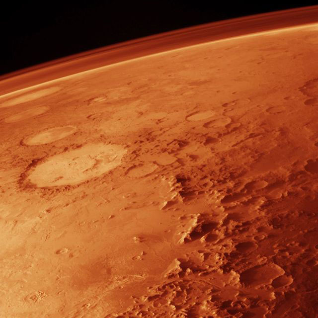
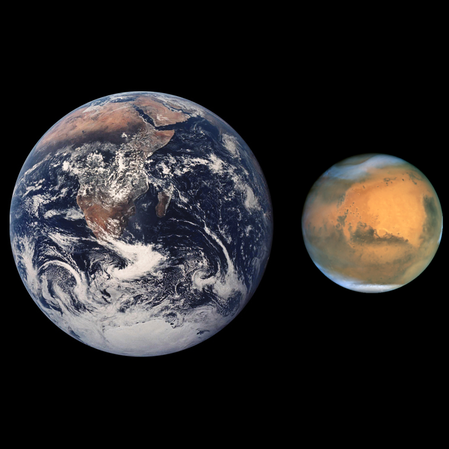

Mars is the fourth planet from the Sun and the second smallest planet in the Solar System, after Mercury. Named after the Roman god of war, it is often described as the "Red Planet" because the iron oxide prevalent on its surface gives it a reddish appearance.
The Phoenix lander returned data showing Martian soil to be slightly alkaline and containing elements such as magnesium, sodium, potassium and chlorine. These nutrients are found in gardens on Earth, and they are necessary for growth of plants.

The tenuous atmosphere of Mars, visible on the horizon in this low-orbit photo

Mars has approximately half the diameter of Earth.